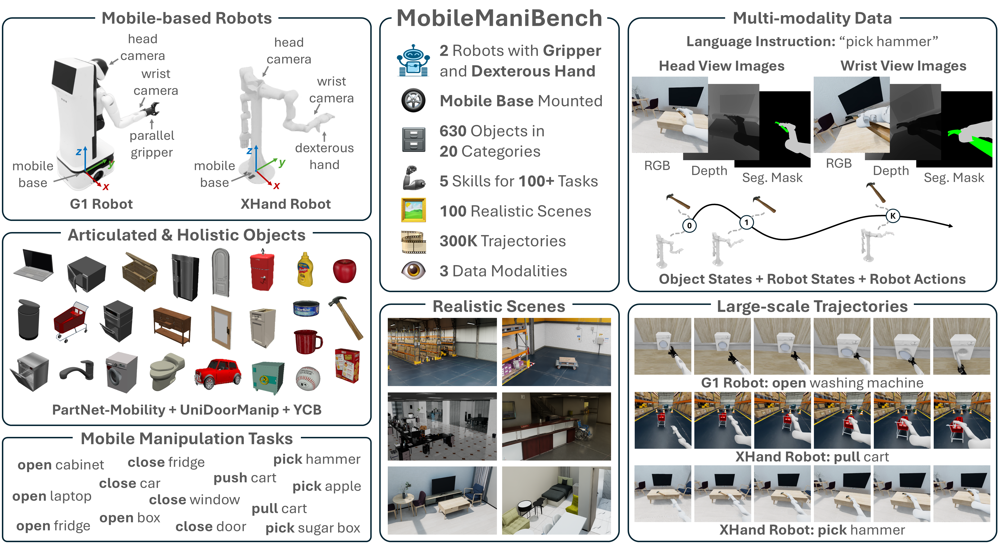
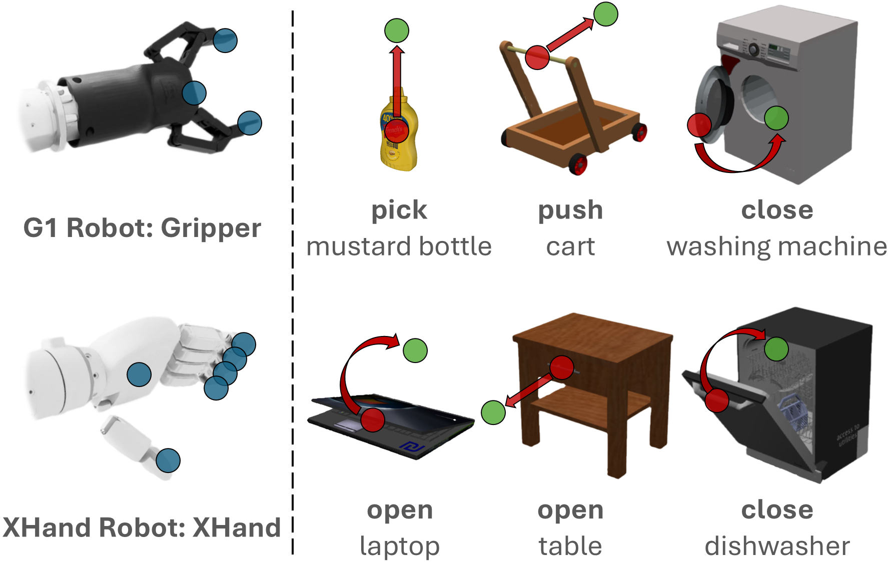
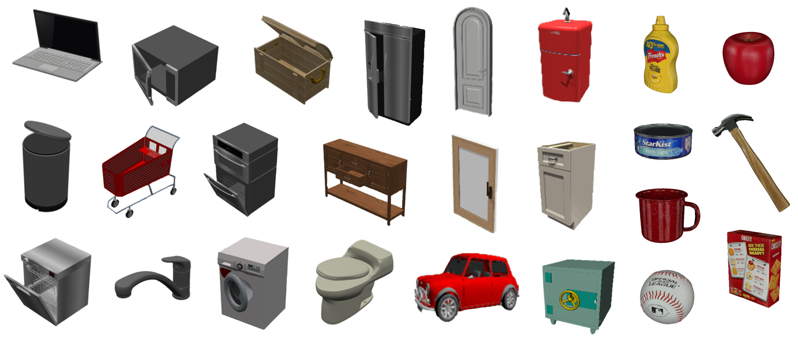
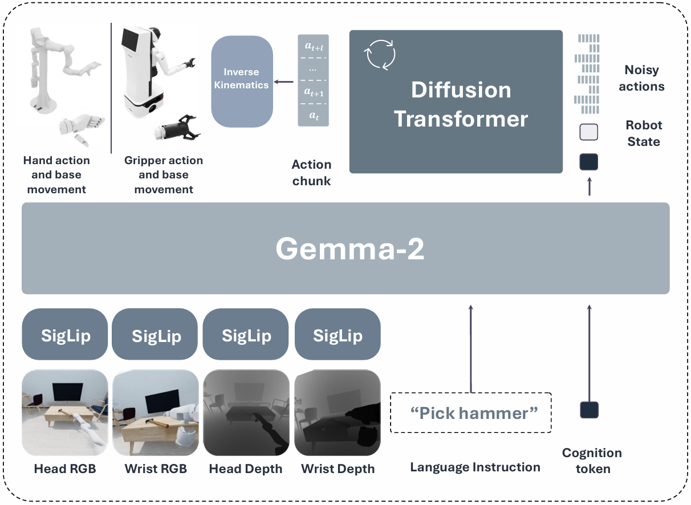
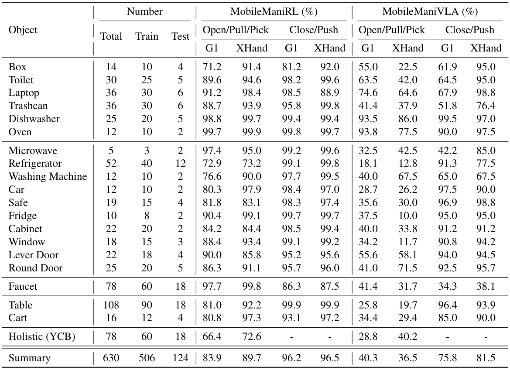
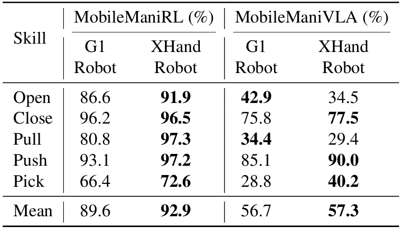

Overview of MobileManiBench. It features 2 mobile-based robots: the G1 robot with a parallel gripper and the XHand robot with a dexterous hand.
The benchmark includes 630 articulated and holistic objects across 20 categories and supports 5 mobile manipulation skills—open, close, pull, push, and pick—enabling over 100 tasks.
To efficiently scale data generation while ensuring task success, we train a universal MobileManiRL policy for each robot-object-skill triplet and generate MobileManiDataset across 100 realistic scenes with 300K trajectories and 3 data modalities—language instructions, multi-view RGB-depth-segmentation images, synchronized object/robot states and actions.
MobileManiBench offers a flexible testbed to accelerate model innovation and data-efficiency research for VLA models.
Vision-language-action models have advanced robotic manipulation but remain constrained by reliance on the large, teleoperation-collected datasets dominated by the static, tabletop scenes.
We propose a simulation-first framework to verify VLA architectures before real-world deployment and introduce MobileManiBench, a large-scale benchmark for mobile-based robotic manipulation.
Built on NVIDIA Isaac Sim and powered by reinforcement learning, our pipeline autonomously generates diverse manipulation trajectories with rich annotations (language instructions, multi-view RGB-depth-segmentation images, synchronized object/robot states and actions).
MobileManiBench features 2 mobile platforms (parallel-gripper and dexterous-hand robots), 2 synchronized cameras (head and right wrist), 630 objects in 20 categories, 5 skills (open, close, pull, push, pick) with over 100 tasks performed in 100 realistic scenes, yielding 300K trajectories.
This design enables controlled, scalable studies of robot embodiments, sensing modalities, and policy architectures, accelerating research on data efficiency and generalization.
We benchmark representative VLA models and report insights into perception, reasoning, and control in complex simulated environments.

Given that MobileManiBench involves 2 mobile-based robots, 630 objects across 20 categories, 5 manipulation skills, and over 100 tasks,
teleoperating or manually designing policies for each configuration would be prohibitively time-consuming.
To address this, we propose a universal state-based reinforcement learning (RL) policy, termed MobileManiRL,
which parameterizes each robot-object-skill combination using keypoint-based displacements of the robot gripper/hand points, the object grasp point, and the goal point.
A universal reward function encourages the robot's gripper/hand points to reach the object grasp point and transport it to the goal point.
This formulation enables a single RL policy to generalize across diverse manipulation scenarios while maintaining task-specific success.
MobileManiRL training for the G1 robot and XHand robot in tabletop and ground scenes.

For each of the G1 robot and the XHand robot, MobileManiDataset comprises 630 objects across 20 categories, manipulated through 5 skills and over 100 tasks using 1,182 robot-object-skill combinations of MobileManiRL, which are further distributed across 100 scene placements.
The dataset is split into 506 objects and 80 scenes for VLA training, plus 124 objects and 20 scenes for testing, yielding a total of 15,232 robot-object-skill-scene combinations for training and 920 combinations for testing.
For each training combination, we generate 10 successful manipulation trajectories in Isaac Sim, resulting in 150K training trajectories.
Each manipulation trajectory is recorded at 30 FPS with an average length of 160 frames, including one natural language instruction; synchronized 520x520 RGB, depth, and segmentation images from both head-view and wrist-view cameras; the corresponding object and robot states; and the executed (6+D) dimensional action at each timestep.
All states and actions are recorded in the global world coordinate frame.

Following CogACT, we structure our MobileManiVLA into three components: the vision, language, and action modules.

Success rates of MobileManiRL and MobileManiVLA on the G1 robot and XHand robot across 20 object categories and 5 mobile manipulation skills.
MobileManiRL is evaluated on seen objects with 1024 episodes per robot-object-skill combination, whereas MobileManiVLA is evaluated on unseen objects and scenes, with 10 episodes per robot-object-skill-scene combination.
Both experiments are conducted with randomized robot initial poses to assess robustness.

Success rates of MobileManiRL and MobileManiVLA on the G1 robot and XHand robot across 5 manipulation skills.